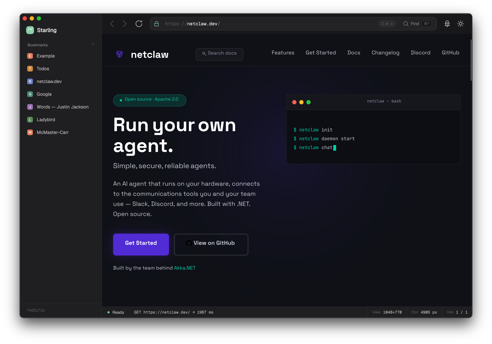

Experimental · Written in .NET
A web browser engine, written in .NET
Starling does not use Chromium, Gecko, or WebKit. The engine is all new code. It is early, and still missing a lot.

Experimental · Written in .NET
Starling does not use Chromium, Gecko, or WebKit. The engine is all new code. It is early, and still missing a lot.
